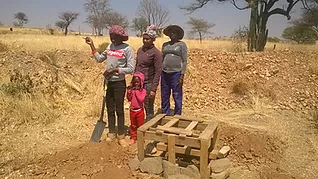
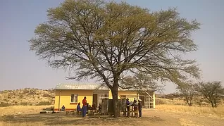
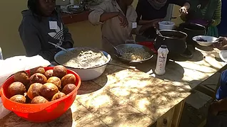
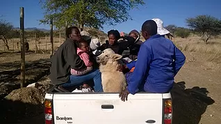
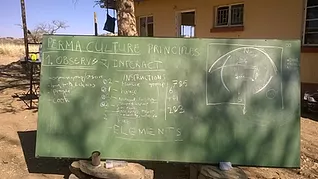
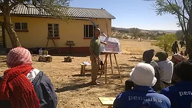
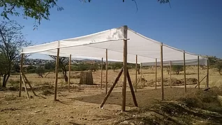
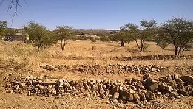
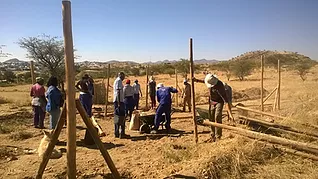

Farm Okukuna
Farm Okukuna is a visionary new project to enhance food and nutrition security in the informal settlements of Windhoek. The farm act as the centre for a number of programmes, including growing food, marketing it and engaging the community on healthy nutrition.
-
We are committed to
- Improve food and nutrition security, especially for women and children
- Improve income situation and support the development of micro-enterprises, particularly for women
- Further develop the food and nutrition security framework of the City of Windhoek








